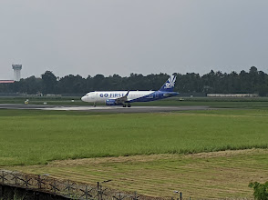

Top three places near Airport

CIAL Golf & Country Club
18-hole golf course spread across 140 acres. Kerala's first international-standard golf course.Offers memberships, coaching, and a clubhouse with dining.Lush, well-maintained and perfect for both serious golfers and casual visitors.

Suvarnodyanam Biological Park
It's a peaceful green retreat near the airport, perfect for nature lovers and families.

Cochin International Airport View Point
The Cochin International Airport View Point in Nedumbassery offers a thrilling front-row seat to watch aircraft take off and land against a backdrop of lush Kerala greenery. Its a favorite hangout for aviation enthusiasts and locals alike, blending excitement with scenic calm.